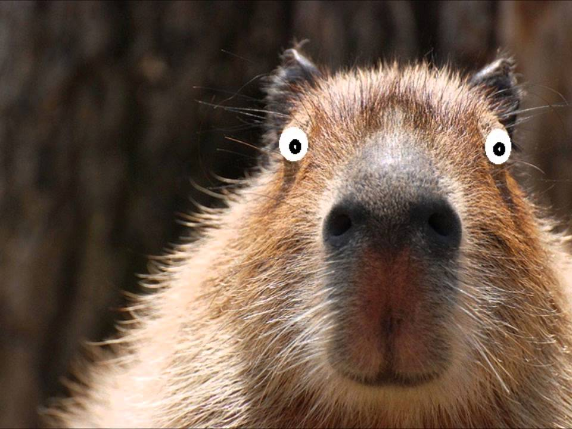

Описание капибары
Капибара (лат. Hydrochoerus hydrochaeris) — полуводное травоядное млекопитающее из семейства водосвинковых (Hydrochoeridae), один из двух (наряду с малой водосвинкой) ныне существующих видов рода водосвинки. Капибара - самый крупный среди современных грызунов